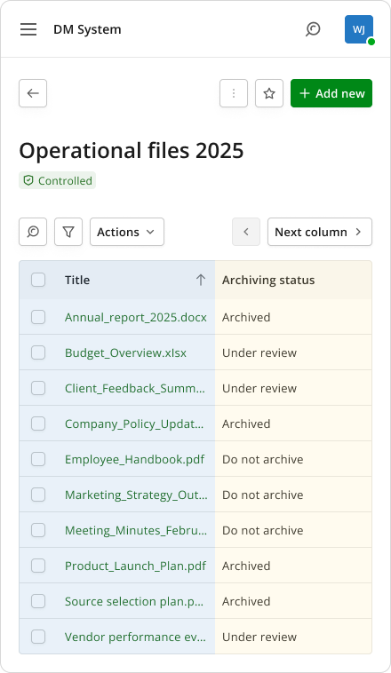
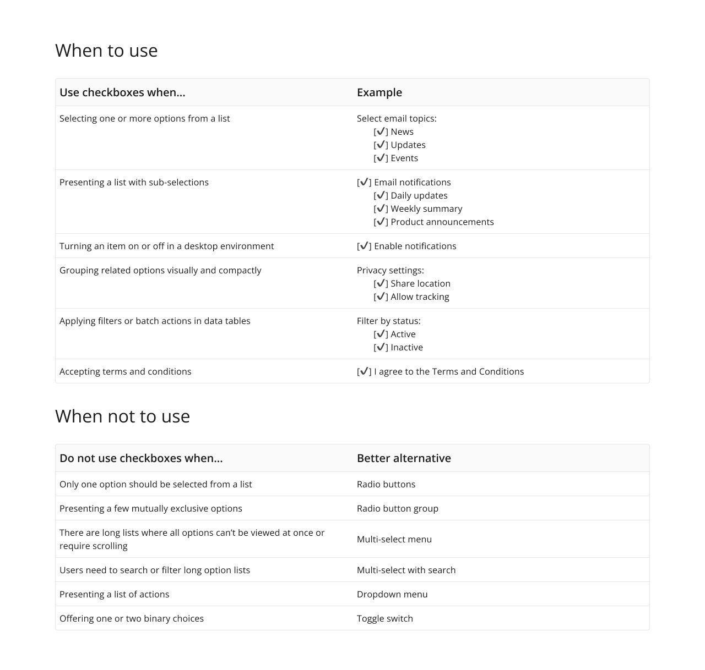
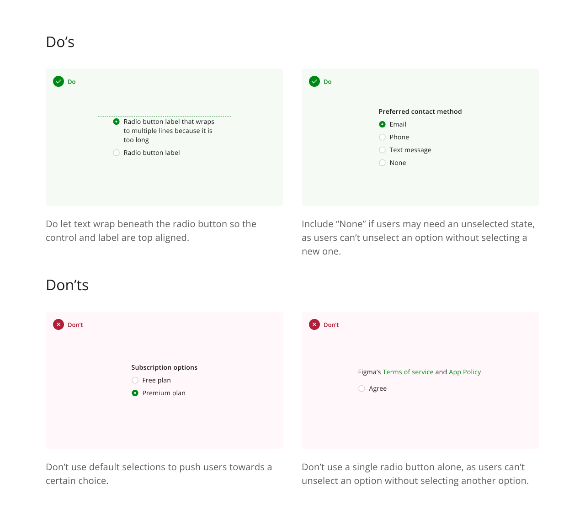
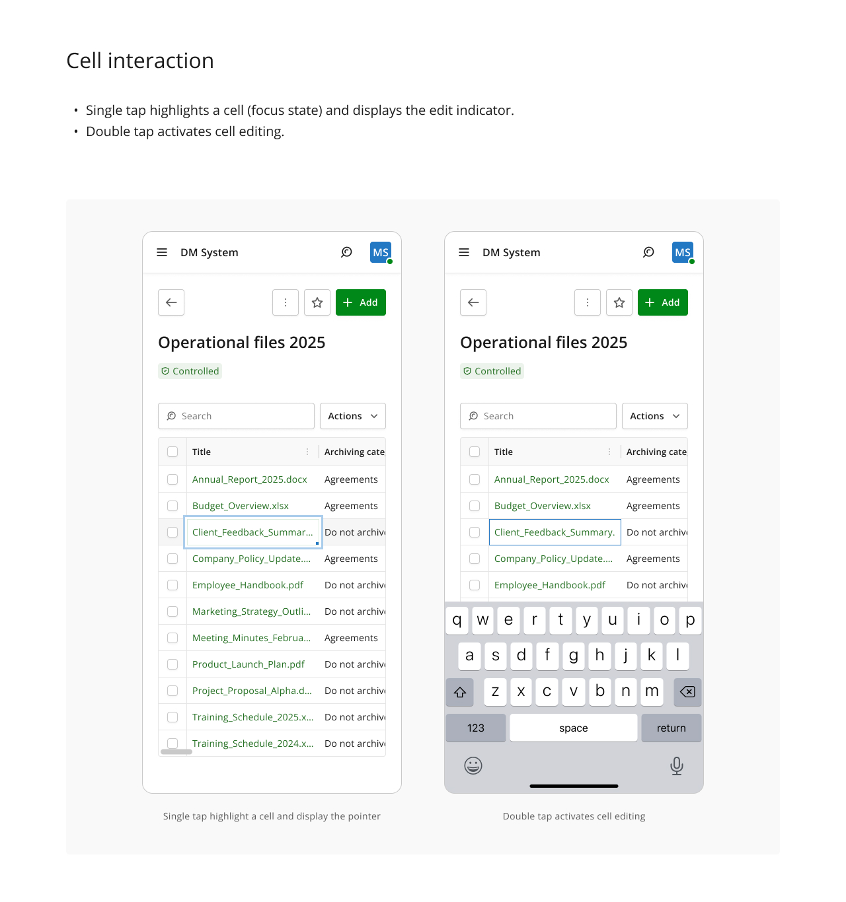
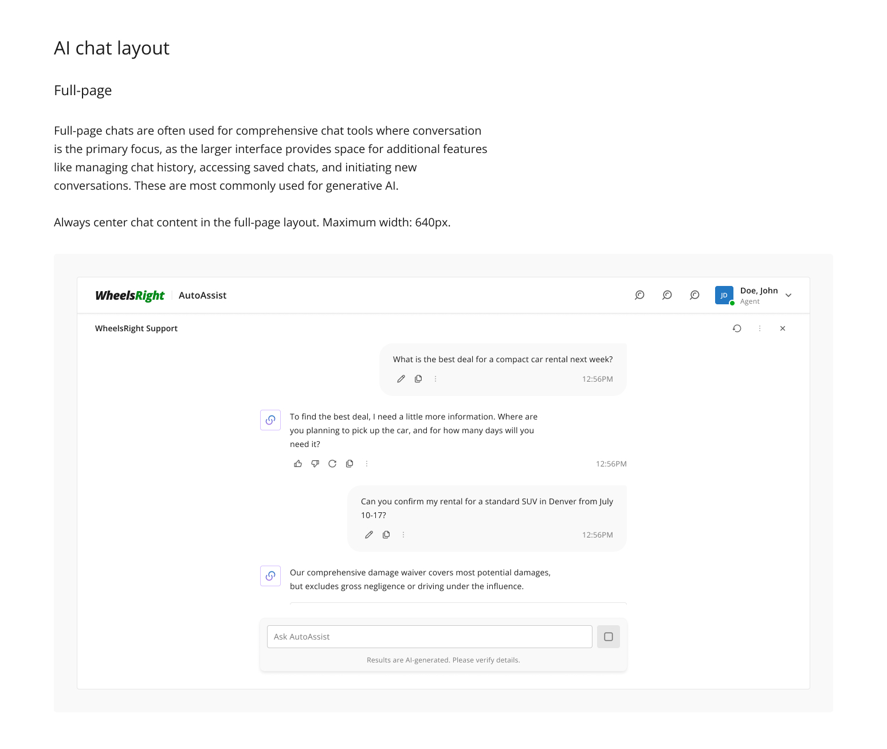
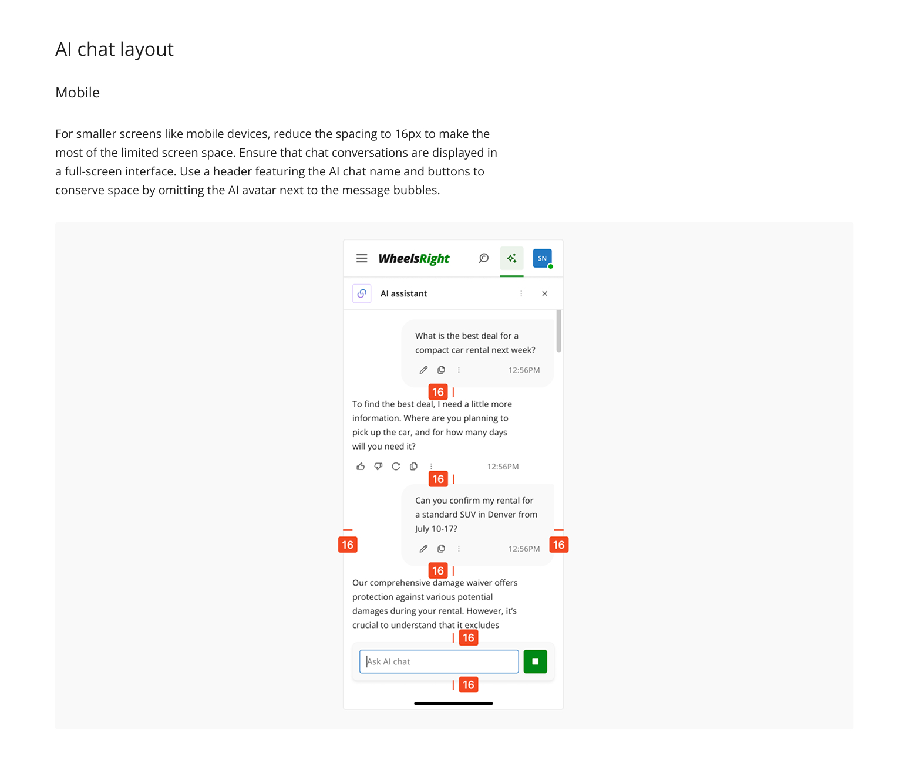

The layer that makes a design system usable
Design system steward, enterprise product suite


- Constraint
- Fifty to a hundred components across twelve-plus products, all built web-first for desktop users, suddenly needing mobile.
- Decision
- Pin the identifier column and let a single comparison column cycle through attributes, rather than shrinking the table.
- Trade-off
- You compare one attribute at a time. The whole row is never visible at once.
- Role
- Design system steward, second of two. Full ownership when the lead was away.
- Timeframe
- Around 1 year
- Scale
- 50 to 100 components with variants and tokens, used across 12+ products
- Outcome
- The guidelines layer rebuilt end to end, and the suite's first mobile patterns, including the data table nearly every product depended on.
[ 01 ]The situation
The system was mature in components and thin in guidance. Components existed, were built atomically with variants and tokens, and were in use across a dozen products. What was missing was the layer that tells another designer what to do with them.
Documentation was patchy, guidelines were vague and inconsistent, and the system had no coverage at all for mobile. My design lead asked me to investigate the whole documentation layer and rebuild it. That became the core of my work.
[ 02 ]How I decided what to document
Before writing guidance for a component, or changing one, I went to the pattern library first.
The pattern library collected real screenshots and mockups of how components were being used across live projects: how designers were actually building data tables, filters, search, even small components like segmented controls. It showed what people did with the system rather than what the system intended.
Guidance written from theory tells designers what should work. Guidance written from observed usage tells them what to do about the situations they are actually in.
It also surfaces the places where the system was pushing people into workarounds.
[ 03 ]The hard part was adjudication, not writing
For any given component decision I would look at how mature systems handled it: Carbon, Material, Visa's guidelines, Apple's, plus NN/g and similar sources.
They disagree. That is the whole problem. Three respected systems will give three defensible answers on when a checkbox beats a toggle, or how a component should behave under constraint, and none of them were built for the enterprise context I was writing for.
So the work was not summarising consensus, because there was no consensus. It was gathering the range of approaches, working out which parts were relevant to our products and our users, and then making a call and owning it. On the harder ones I drew on my design lead's experience, but the structure, the analysis and the decisions were mine.


[ 04 ]Mobile patterns
This was the hardest and most interesting part of the year.
Every product in the suite was built web-first for desktop users. There were no mobile patterns because there had been no mobile need, and when it arrived, responsive breakpoints were not going to be enough.
Complex enterprise components do not survive being narrowed. They need to be rethought.
The hardest of those was the data table, which nearly every product depended on.
[ 05 ]Data tables on a small screen
A table works because you can compare values across columns. On a phone you cannot show the columns, so the comparison has to happen another way.

- The key identifier stays locked. Usually the first column, always visible, so users never lose track of which row they are reading.
- The second column swaps. Arrow controls cycle it through the other attributes, one at a time. You are never comparing eight columns, you are comparing the identifier against one attribute you chose, which is closer to how people read tables anyway. Headers stay visible while scrolling so the context never disappears.
- The controls column adapts by breakpoint. Fixed between 481px and 576px, and below that it no longer needs to be pinned but must stay reachable.
- Cell editing takes two taps. Single tap sets focus and shows the edit indicator. Double tap opens editing. On desktop a single click to edit is fine. On mobile, where a stray tap is easy and the keyboard takes half the screen, committing to edit should require deliberate intent.
- Column management has fallbacks. The default is drag to reorder. Where drag and drop was not technically feasible, the guidance offers two alternatives: assign a position number per column, or pick position from a dropdown.
Handing engineering only the ideal interaction leaves them to invent the fallback themselves, which is how systems drift.

Getting there
I researched how mature systems and NN/g handle small-screen tables, then adapted rather than copied. None of those sources were solving for enterprise data density with editing and bulk actions, so the patterns needed reworking for our case. The pinned identifier plus swappable comparison column came out of that.
[ 06 ]AI chat as a documented pattern
As products began adding conversational features, I documented the layout as a system pattern rather than letting each team improvise.
Full page centred, maximum 640px. On mobile, spacing reduced to 16px, full-screen presentation, and the AI name moved into the header so the avatar could be dropped from every message bubble, which buys back meaningful width on a narrow screen.


[ 07 ]What I owned, and what I did not
The components themselves were the design lead's work. I did not create components from scratch. I added states and subcomponents, redesigned and improved existing ones, worked on tokens and variables, and removed redundancies.
What I owned outright was the guidelines layer, mobile patterns, and the day-to-day support and mentoring of designers using the system across teams.
Nadia is getting the most possible out of the design system. At times she moves beyond what exists in other systems and creates something of her own using the available components. This is exactly the kind of outcome I expect from other designers: to treat the design system as a kind of construction kit.